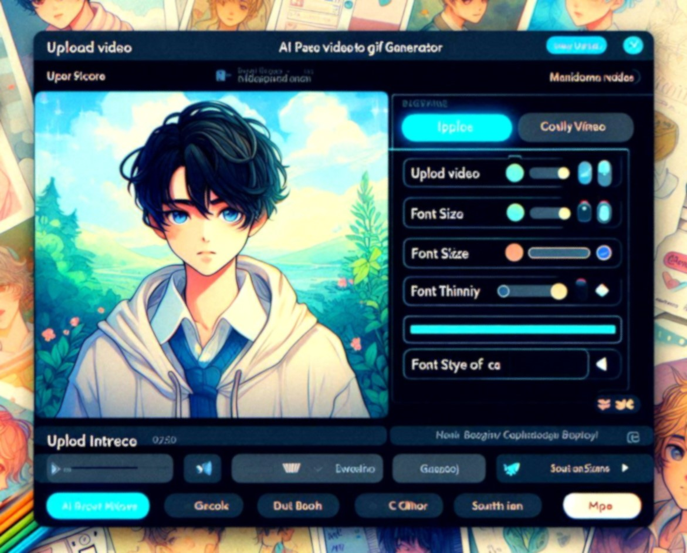
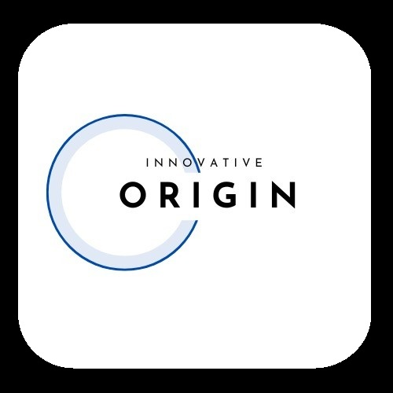

Hi, I'm P. V. Chaitanya 👋
I'm passionate about AI/ML and love using my skills to tackle real-world challenges. I'm proficient in Python, TensorFlow, and have a track record of successful AI/ML projects. Always eager to learn and collaborate, I'm looking for exciting opportunities to contribute to innovative AI/ML initiatives. Feel free to reach out!
To Contact:


Work Experience:
-
Associate Software Engineer | Innocito | April 2025 – Present:
- As an Associate Software Engineer at Innocito, I'm working on research and development in generative AI, focusing on NLP, computer vision, and multimodal AI applications.
- Built a real-time AI Voice Agent with conversational intelligence, reducing latency by 3 seconds per request for more natural experiences.
Tech Stack: Python, Machine Learning, Deep Learning, Gen AI, Multimodal LLMs, PyTorch, NLP, Computer Vision
-
AI Software Developer | Freelancing | March 2024 – February 2025:
Client: Hooman Digital
- Fine-tuned AI agents for AI-powered social media, cutting manual task time by 30% via automation and delivering ahead of schedule.
Client: Persist Ventures
- Built a fully automated AI-powered GIF Studio, boosting accuracy (95%), speed (5×), & user engagement (100×).
Client: AI Gen media
- Built an AI-driven text-to-video tool ahead of schedule, achieving visual consistency (80%) from concept to production.
- Tech Stack: Python, OpenCV, MoviePy, Streamlit, FastAPI, Selenium, Google OAuth, Web Scraping, NLP, Prompt Engineering, Gen AI, Multimodal LLMs, Crew AI.
-
SDE AI/ML Intern | Spring Works | July 2023 - September 2023:
- Increased chatbot test coverage from 30% to 75% through Python test development.
- Collaborated with fellow interns to develop successful Proofs of Concept (POCs).
Tech Stack: Python, Pytest, NLP, LLMs, LangChain, LlamaIndex, Vector Database
-
AI/ML Intern | Technical Hub | July - Nov 2022 & May - July 2023:
- Developed and deployed ML models, increasing model accuracy by 90%.
- Mentored new interns, providing guidance and assistance with project blockers.
Tech Stack: Python, Machine Learning, Deep Learning, TensorFlow, NLP, LLMs, Computer Vision.
Skills & Proficiencies:
-
Programming Languages:
Python, C/C++
-
Technologies & Proficiencies:
Machine Learning, Deep Learning, Generative AI, AI Agents, RAG
-
Frameworks & Tools:
PyTorch, LangChain, FastAPI, SQL, NoSQL Pytest, Streamlit, Git
Education:
-
Bachelor's degree in Computer Science Engineering:
Graduated in 2024 with a Bachelor's degree in Computer Science and Engineering from Aditya College of Engineering & Technology.
Projects:
ED AI:
ED AI is an AI-powered educational assistant that enhances learning with personalized course recommendations, Socratic method chat, and mock interview simulations, addressing teaching and learning challenges.
AI-Powered Video to GIF:
This Streamlit web app lets users automatically create text-overlay GIFs from videos. It transcribes audio, identifies key moments, and generates GIFs displaying transcribed words at those moments.
Story Book AI:
This project explores transforming textual narratives like story scripts and novels into visual representations. It achieves this through a sequence of images, capturing the essence of key scenes and characters.
AI-Enhanced Surveillance:
Automating surveillance, the Face Recognition System scans live camera feeds for specific individuals via facial recognition. It detects faces, alerts upon matches in its database, streamlining surveillance.
LLM-powered Database Assistant:
Utilizing an open-source Large Language Model, our custom chatbot excels in natural conversations, seamlessly integrating with a tailored Database for comprehensive knowledge and personalized interactions..
License Plate Detection:
YOLOv5 is used for License Plate Detection, employing machine learning to identify license plates in images. Its web interface allows easy media upload and processing, providing the count of detected Yellow plates.
Stock Price Prediction:
By Utilizing LSTM algorithm, this project predicts stock prices, aiding investors with informed decisions, steering clear of unreliable sources. Also developed a Flask-powered web app employing HTML/CSS for accessibility.
Article Classifier & Database:
Developed a Python-based News Article Classifier aims to categorize articles (Politics, Sports, Technology) submitted in text or URL format. Data is stored in MongoDB, enhancing user empowerment and data organization.
Sign Language Translator:
This project has camera-equipped device records sign language, employing machine learning to translate it into spoken language, fostering improved communication between sign language users and non-users.
Achievements:
- Won the Solving for India Hackathon at Institutional Level, which was conducted by GFG, Google and AMD - Certificate.
- Won International Hackathon: Fresh Hacks by devpost. - Certificate.
- 2-star coder in Codechef.
- Completed 350+ problems on Leetcode and Geeks for Geeks.
- Achieved 5-star rating on Hacker Rank in Problem Solving, C++, Python, SQL.
Volunteer Experience:
-
SDE Mentor | Innovative Origin | April 2024 – March 2025: 
- Taught industry-ready skills in AI and ML to a diverse group of 100+ students.
- Provided interactive, personalized guidance classes.
Certifications:
- Azure AI Fundamentals from Microsoft - Certificate
- MTA Python Certification from Microsoft - Certificate
- The Joy of Computing Using Python from NPTEL - Certificate
- Data Science for Beginners from NASSCOM - Certificate
Complements:
-
"Chaitanya worked at AIGen Media for 3 months. During this time he made contributions to key pieces of our product. He work was instrumental in improving the consistency of character and setting description in our image prompt generation pipeline."
- Shashikanth Sreenivasaiah
Email: shashi@aigenmedia.net
-
"I had the pleasure of working alongside P.V. Chaitanya at Springworks. I wholeheartedly recommend him for any role related to AI/ML and NLP. His technical expertise, innovative spirit, and collaborative approach make him an invaluable asset to any team."
- Mulakaledu Usha Sree
Email: ushasree.mulakaledu@gmail.com
-
"I wholeheartedly endorse Mr. Pennada Venkata Chaitanya as an exemplary student with a fervor for Artificial Intelligence and Machine Learning. His outstanding achievements, practical experience, and commitment to continuous learning make him an exceptional candidate for any academic or professional opportunity."
- Nadella Sunil, M. TECH, (Ph. D)
Email: sunil.nadella@acet.ac.in
-
"I am incredibly grateful to have had Chaitanya as my mentor in the field of AI/ML. His guidance has been instrumental in shaping my career, providing me with not just theoretical knowledge but practical insights that are easy to understand and apply. Chaitanya has a unique ability to break down complex concepts into simple, digestible pieces, making the learning process both enjoyable and effective. His support extended beyond just teaching by offering invaluable career advice that has had a lasting impact on my professional journey."
Manasa siri Yalla
Email: manasasiriy@gmail.com
-
"I’ve had the pleasure of working with Chaitanya, a brilliant Machine Learning Engineer who generously volunteers his time to teach at Innovativ Origin. He is not only knowledgeable but also an exceptional teacher. He simplifies complex AI-related concepts, making them easy to understand. His kindness and approachable nature encourage students to engage deeply. Chaitanya's dedication ensures that every student grasps the material, and his passion for teaching is evident in all he does. We're fortunate to have him on our team."
Srinivas
Email: support@innovativeorigin.onmicrosoft.com